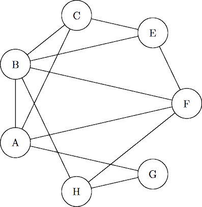

This post is an adaptation of "Qui a tué le Duc de Densmore?", a summary of the homonymous short story by Claude Berge.
One day Sherlock Holmes received the visit of his friend Watson, who was asked to investigate on a murder that had gone unsolved for more than ten years.
At the time, the Duke of Densmore had been killed by a bomb powerful enough to destroy the castle where he had been living since retirement. Newspapers wrote that his testament, also destroyed in the explosion, was very harsh on one of his seven ex-viwes. Despite this, the Duke had invited all of them in his Scottish castle a few days before dying.
Holmes: I remember this case. What's strange is that the bomb was manifactured to fit, perfectly hidden, in one of the armors of the bedroom, which implies that the murderer must have been several times to the castle.
Watson: Of course, and for this reason I interrogated each woman: Ann, Betty, Charlotte, Edith, Felicia, Georgia and Helen. They all swore that they had been to Densmore's castle exactly once in their lifetimes.
Holmes: Mh. Did you ask them the precise dates of their respective stays?
Watson: Alas! No one could remember them after more than ten years. Nevertheless, I asked them who they had met there:
Ann met Betty, Charlotte, Felicia and Georgia. Betty met Ann, Charlotte, Edith, Felicia and Helen. Charlotte met Ann, Betty and Edith. Edith met Betty, Charlotte and Felicia. Felicia met Ann, Betty, Edith and Helen. Georgia met Ann and Helen. Helen met Betty, Felicia and Georgia.
Watson: As you can see, my dear Holmes, their answers match.
Holmes then took a pencil and drew this strange picture:
Then, after staring at it for less than thirty seconds, he shouted:
Holmes: Well, well! Mister Watson, what you just told me determines uniquely the identity of the killer!
Who is the murderer, and how many times (at least) did she snuck into the castle?
If you think you know the answer, tweet it by clicking here.